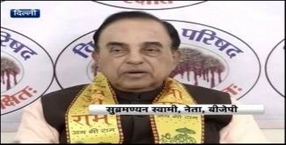

News
बीजेपी नेता सुब्रमण्यम स्वामी बोले- दिसंबर में शुरू हो जाएगा राम मंदिर का निर्माण

बीजेपी के नेता सुब्रमण्यम स्वामी ने दावा किया है कि अयोध्या में राम मंदिर का निर्माण आमसहमति से होगा और इस साल के आखिर तक मंदिर निर्माण का काम शुरू हो जाएगा. स्वामी ने दावा किया कि इस साल के अंत तक अयोध्या में राम मंदिर का निर्माण कार्य शुरू कर दिया जाएगा और 9 जनवरी को इसके लिए एक्शन प्लान का ऐलान किया जाएगा.
आमसहमति से होगा निर्माण
हालांकि, स्वामी ने यह भी स्पष्ट कर दिया कि मंदिर का निर्माण किसी आंदोलन के जरिए नहीं किया जाएगा. उन्होंने कहा कि मंदिर निर्माण का काम आम सहमति से होगा. अदालती आदेश और हिंदुओं व मुसलमानों की आपसी सहमति से यह काम किया जाएगा. उन्होंने उम्मीद जाहिर की कि अगस्त-सितंबर तक इस मामले में सुप्रीम कोर्ट का फैसला आ जाएगा.
कहीं चुनावी मुहिम को नहीं?
बुधवार को विश्व हिंदू परिषद कार्यालय में पत्रकारों से बात करते हुए स्वामी ने कहा कि अगले दो-तीन महीनों में हमें मंदिर निर्माण कार्य शुरू हो जाने की उम्मीद है. नहीं तो साल के आखिर तक यह काम जरूर शुरू हो जाएगा. उनसे पूछा गया कि यह फैसला अगले साल उत्तर प्रदेश विधानसभा चुनाव को ध्यान में रखते हुए तो नहीं लिया गया है? इस पर स्वामी ने कहा कि श्रीराम का मामला हिंदुओं के लिए आस्था और विश्वास का है. अयोध्या में मंदिर निर्माण के लिए हर हिंदू प्रतिबद्ध है. श्रीराम को चुनाव से नहीं जोड़ा जाना चाहिए.
डीयू में सम्मेलन
स्वामी ने कहा कि हिंदुओं और मुसलमानों के बीच इस मुद्दे के सौहार्दपूर्ण समाधान के लिए भी प्रयास किया जा रहा है. स्वामी ने बताया कि इस मुद्दे पर दिल्ली विश्वविद्यालय में दो दिन का सम्मेलन आयोजित किया जा रहा है. इस दौरान लगभग तीन सौ विद्वान, शिक्षाविद और पुरातत्वविद इस मसले पर चर्चा करेंगे.
शिलापूजन से छिड़ी चर्चा
इससे पहले अयोध्या में राम मंदिर निर्माण को लेकर विश्व हिंदू परिषद (वीएचपी) की ओर से शिला पूजन किए जाने के बाद से ये मामला सुर्खियों में आ गया था. बाबरी केस के मुख्य पक्षकार हासिम अंसारी ने शिलापूजन के बाद पूरी प्रक्रिया पर सवाल उठाए थे और प्रधानमंत्री मोदी से इसमें हस्तक्षेप की मांग की थी.
उससे पहले, बीजेपी के वरिष्ठ नेता और राज्यसभा सदस्य विनय कटियार ने राम मंदिर के निर्माण की बात दोहराते हुए मुस्लिमों से अयोध्या पर अपना दावा छोड़ने को कहा था. उन्होंने कहा कि अयोध्या पर मुस्लिम अपना दावा छोड़ दें अब साबित हो गया है कि यह राम जन्मभूमि ही है. कटियार ने यहां तक कहा कि राम मंदिर निर्माण में तीसरे विकल्प के तौर पर सरकार संसद में कानून भी बना सकती है.
वीएचपी ने शुरू किया था राष्ट्रव्यापी अभियान
दरअसल, वीएचपी की ओर से अयोध्या में राम मंदिर निर्माण की खातिर छह महीने पहले देशभर से पत्थर इकट्ठा करने का राष्ट्रव्यापी अभियान शुरू किया गया था. इसी के तहत जमा किए किए पत्थरों से लदे दो ट्रकों ने रविवार को शहर में प्रवेश किया है. इस पूरी कवायद के बीच जिला पुलिस सतर्क हो गई और यूपी सरकार ने हालात पर नजर रखना शुरू कर दिया है.
'सब कुछ सुप्रीम कोर्ट के आदेश के दायरे में'
बाद में बीजेपी सांसद विनय कटियार ने कहा, 'हमने मंदिर की एक मंजिल के निर्माण का काम कर लिया है. पत्थरों को गढ़ने का काम शुरू हो चुका है. सब कुछ सुप्रीम कोर्ट के आदेश और नियमों के तहत हो रहा है. दूसरी मंजिल के निर्माण कार्य को लेकर भी जल्द ही योजना शुरू होगी.'
निजी परिसर में रखे गए पत्थर
पुलिस ने कहा, 'हम हालात पर पैनी निगाह रख रहे हैं. पत्थर लाए गए हैं और एक निजी परिसर में रखे गए हैं. इस वाकये से यदि शांति भंग होती है या सांप्रदायिक सद्भाव बिगड़ता है तो हम निश्चित तौर पर कार्रवाई करेंगे. अयोध्या में राम मंदिर निर्माण का अपना प्रण दोहराते हुए वीएचपी ने जून में ऐलान किया था कि वह मंदिर निर्माण के लिए देशभर से पत्थर इकट्ठा करेगी.
सोशल मीडिया पर नजर
यूपी सरकार ने अयोध्या में शिलापूजन के बाद बढ़ी सक्रियता के बीच कहा कि सरकार सोशल मीडिया पर भी नजर रखे हुए है ताकि लोग माहौल बिगाड़ने के लिए सोळ मीडिया का इस्तेमाल न कर सकें.
More News

Man Runs Parallel To PM Modi's Convoy, Triggers Security Scare.
A man created triggered a security scare after he was seen running parallel to Prime Minister Narendra Modi's convoy in Mysuru, with a bag on Saturday. As people lined up on both sides of the road, the man chanted "Modi, Modi" and ..
Read morePM condemns terror attack in Pathankot, says evil designs of Indias enemies will never succeed.
PM visits Avadhoota Datta Peetham in Mysuru, attends Centenary Celebrations...
Read morePreliminary work on Kalam memorial begins
Prime Minister Narendra Modi had announced on October 15, the birth anniversary of Kalam, that a memorial would be built for the late 'Missile Man' and had requested Tamil Nadu government...
Read moreRSS chief Mohan Bhagwat calls for serious education in tradition.
RSS Chief Mohan Bhagwat has strongly batted for financial assistance to institutions like Kerala's famous Thanthra Vidyaa Peettham, where temple culture..
Read more